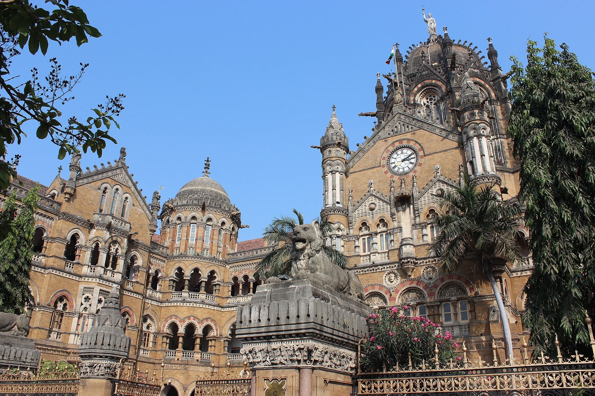
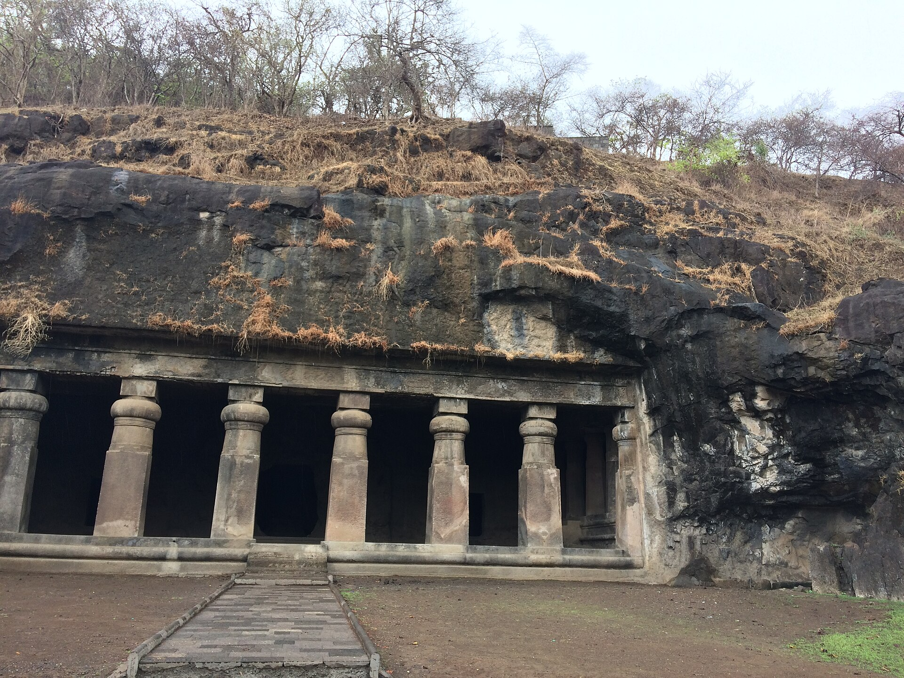
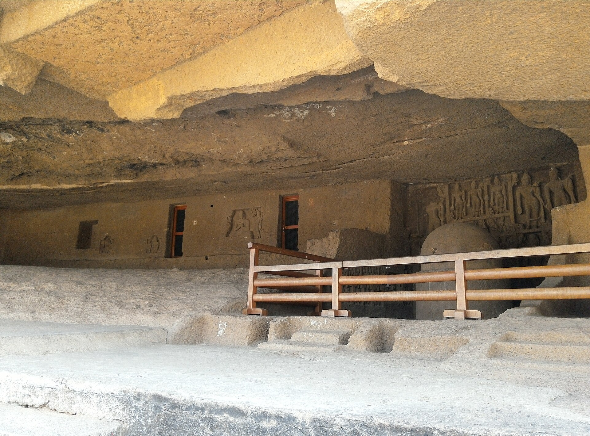
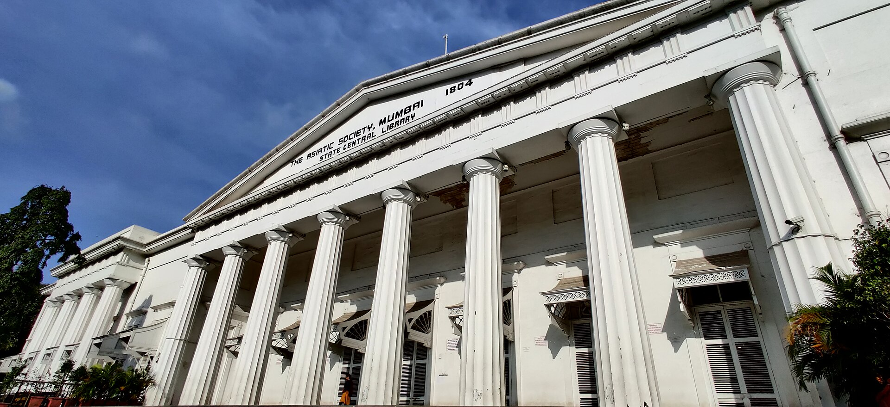
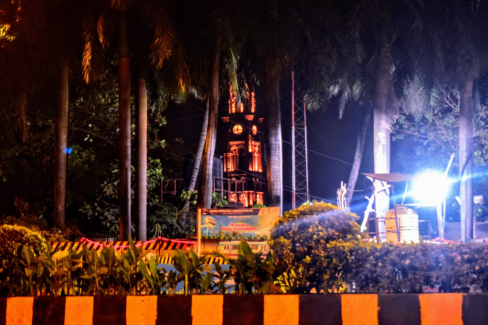
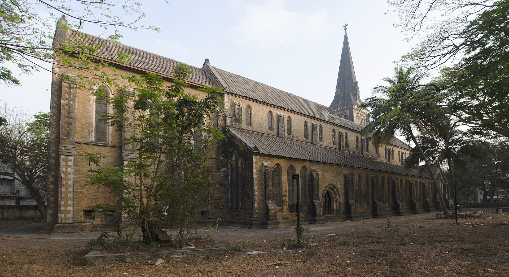
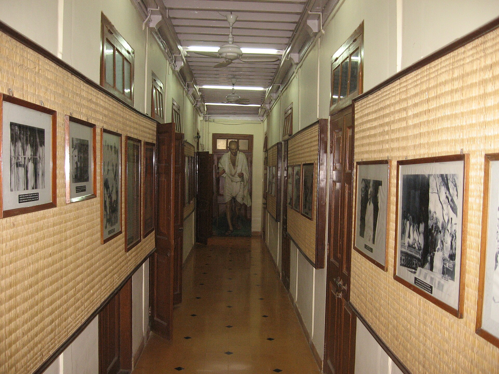

Mumbai heritage · Visual journey
See the city through its landmarks.
A visual collection of the historic buildings, monuments and caves featured across this Mumbai tourism website.
 Gateway of India
Gateway of India
Chhatrapati Shivaji Maharaj Terminus
Elephanta Caves
Kanheri Caves
Asiatic Library
Rajabai Clock Tower Chhatrapati Shivaji Maharaj Vastu Sangrahalaya
Chhatrapati Shivaji Maharaj Vastu Sangrahalaya
Afghan Church Mount Mary Basilica
Mount Mary Basilica
Mani Bhavan Bombay High Court
Bombay High Court